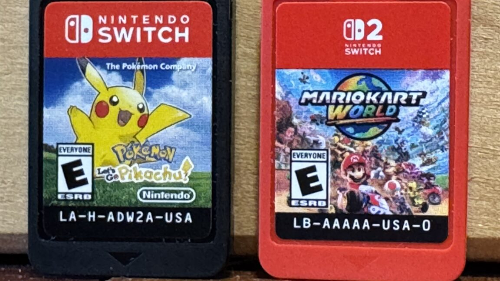

Technology · 05 Nov 2026
Nintendo's biggest ROM chip supplier is bowing out of the business

And what that could mean for physical Switch game costs.
Multiple independent publishers are reporting on the same development: Nintendo's biggest ROM chip supplier is bowing out of the business.
The available reports place the development in the Technology category. The accounts were compared for agreement on the central event rather than simply shared names or broad topics.
One of the available reports describes the development this way: And what that could mean for physical Switch game costs.
Readers should consult the linked source reports for additional context, updates and details that may change as the story develops.
Sources
This article was produced by the C. O. Eric AI Newsroom from the cited sources. It is published only after automated evidence and safety checks.